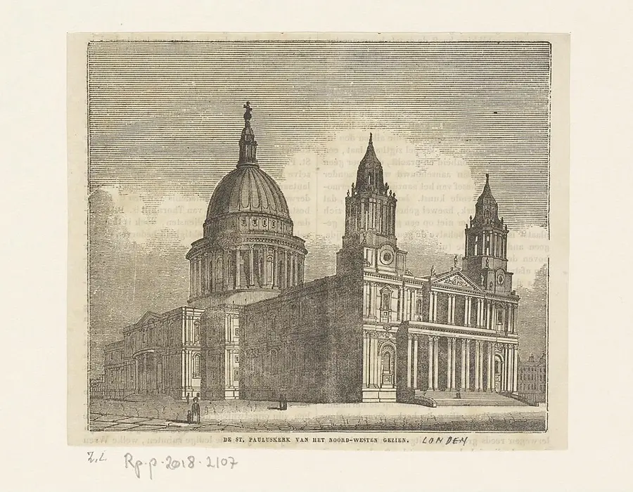
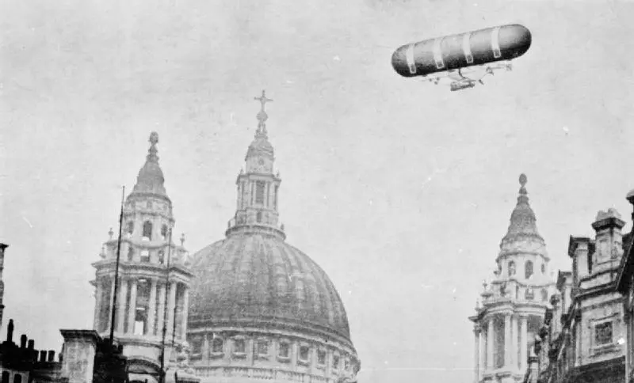

대표 로고대표 브랜드 마크
대표 로고대표 브랜드 마크세인트폴 대성당 St Paul's Cathedral
세인트폴 대성당(St Paul's Cathedral)은 영국 시티 오브 런던의 러드게이트 힐에 있는 높이 111m의 성공회 성당이다. 런던 주교좌가 자리 잡고 있으며 사도 바울로에게 봉헌되었다.
최종 업데이트
세인트폴 대성당은 어떤 브랜드인가
세인트폴 대성당은 시티 오브 런던의 러드게이트 힐에 있는 성공회 성당이다. 런던에서 가장 유명한 랜드마크 중 하나로 꼽히며, 멀리서도 잘 보이는 돔은 약 300여 년이 넘는 시간 동안 런던의 스카이라인 속에 자리하고 있었다.
높이 111m로 1710년부터 1967년까지 런던에서 가장 높은 건축물이었다. 리버풀 대성당 다음가는 크기로 영국에서 2번째로 큰 교회 건물이다.
허레이쇼 넬슨 경, 웰링턴 공작, 윈스턴 처칠, 마거릿 대처의 장례식과 찰스 왕세자와 다이애나 비의 결혼식 등 국가적인 행사가 열렸다. 지금도 종교적인 용도로 쓰이며 매일 집회와 미사가 열린다.
세인트폴 대성당은 어떻게 시작되고 성장했나
기원후 604년에 이 자리에 지어져 있던 성당을 원형으로 하여 세워졌다. 원래의 세인트폴 대성당은 1666년 런던 대화재 때 불타 버렸다.
1675년에 크리스토퍼 렌 경의 감독 아래 영국 바로크 양식으로 다시 짓기 시작해 35년 만에 완공했다. 렌 경은 베네치아의 건축가 안드레아 팔라디오에게서 영감을 받아 영국의 중세 건축 양식을 더 근대적으로 해석했고, 17세기 로마의 바로크 양식에도 영향을 받았다.
불타기 전의 옛 대성당은 런던 시가지의 중심지에 자리하고 있었다.
세인트폴 대성당의 브랜드 아이덴티티는 무엇인가
크리스토퍼 렌 경이 설계한 영국 바로크 양식의 성당으로, 지름 34m의 거대한 돔과 속삭이는 회랑이 특징이다.
세인트폴 대성당은 지금 어떤 상태인가
대성당은 여전히 종교적인 용도로 사용되고 있으며 매일 집회와 미사가 열린다. 관광객 입장료는 2019년 1월 기준으로 성인 20파운드이며, 순례객은 출입료를 받지 않는다.
돔은 지름 34m이고, 돔 아래의 회랑은 '속삭이는 회랑'이라고 불린다. 돔 위 랜턴 꼭대기의 황금 공과 십자가는 높이 7m, 무게 8톤이다.
세인트폴 대성당 로고는 어떻게 변해왔나
대표 로고대표 브랜드 마크사진으로 보는 세인트폴 대성당의 역사


자주 묻는 질문
세인트폴 대성당는 어느 나라 브랜드인가요?
세인트폴 대성당는 영국의 여행·호스피탈리티 브랜드입니다.
세인트폴 대성당의 브랜드 아이덴티티는 무엇인가요?
크리스토퍼 렌 경이 설계한 영국 바로크 양식의 성당으로, 지름 34m의 거대한 돔과 속삭이는 회랑이 특징이다.
세인트폴 대성당는 현재 어떤 상태인가요?
대성당은 여전히 종교적인 용도로 사용되고 있으며 매일 집회와 미사가 열린다.
세인트폴 대성당의 공식 웹사이트는 어디인가요?
세인트폴 대성당의 공식 웹사이트는 http://www.stpauls.co.uk/ 입니다.
출처와 검증
세인트폴 대성당 관련 참고: 공식 웹사이트 · 위키데이터 Q173882 · 한국어 위키백과 · 영어 위키백과. 브랜드명은 한글과 원어를 함께 표기하되 데이터에 없는 표기는 만들지 않습니다. 기원 국가·설립연도는 검수된 정의문에서 확인된 값을 우선하고, 없을 때만 공식 웹사이트 URL이 일치하는 위키데이터 개체의 값을 씁니다. 웹 첫 보관은 인터넷 아카이브가 공식 사이트 첫 화면을 처음 보관한 날로, 사이트 개설일과 다를 수 있습니다. 위키데이터 값은 2026-10-18 기준입니다.